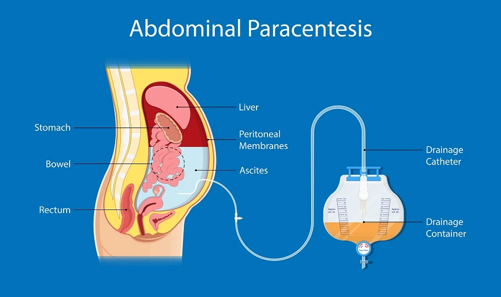
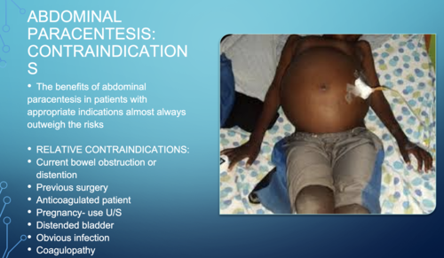
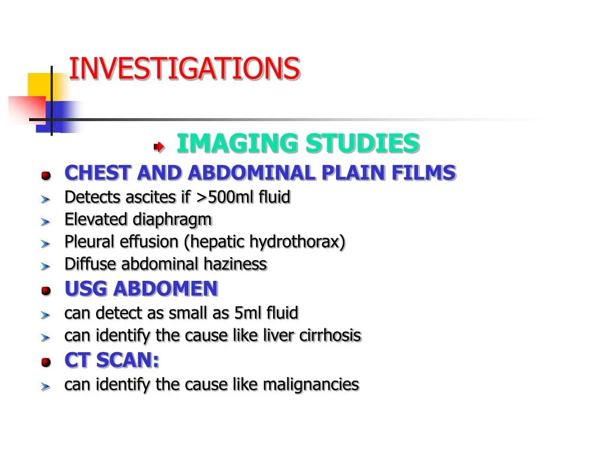
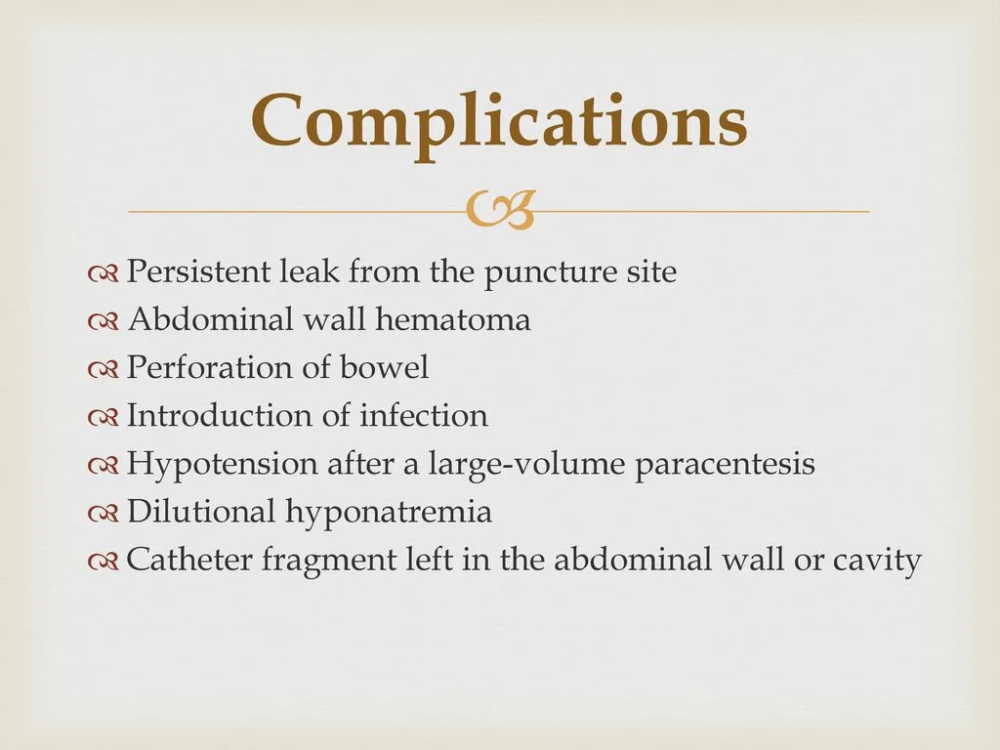
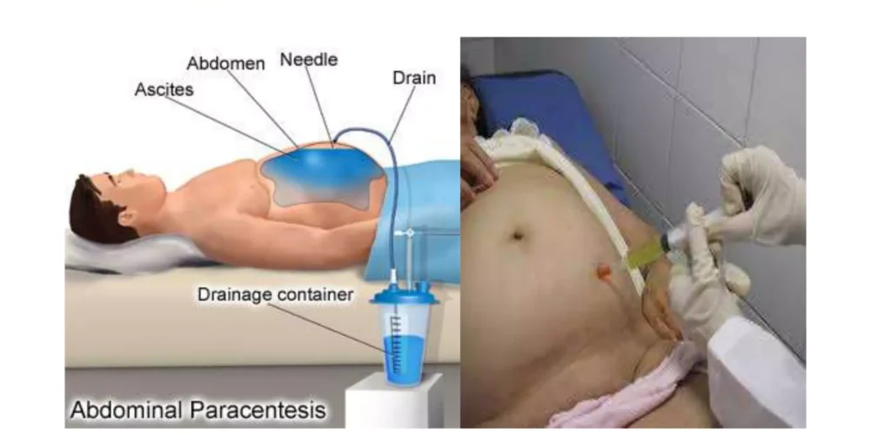

Expanded Nursing Uganda Explanation
Abdominis Paracentesis (Abdominal Tapping) should be understood beyond a short definition. Link the concept to patient history, focused assessment, common risks, nursing priorities, documentation and evaluation of outcomes.
Contents, 13 sections (tap to expand)
01 ABDOMINAL PARACENTESIS/PARACENTESIS ABDOMINIS
This is the procedure done to aspirate fluid from the peritoneal space (ascites).
Paracentesis : it’s removal fluid from the belly. It is commonly called a ‟ tap ”.( Abdominal Tap )
Tapping of ascites is usually undertaken to take off small volumes of ascites for analysis. This is in comparison to paracentesis where a drain is inserted whereby larger volumes can be removed.
02 Indications of Abdominal Paracentesis
Specific Indications for Paracentesis :
- New-Onset Ascites : Paracentesis is crucial for determining the underlying cause of ascites and differentiating between transudate and exudate.
- Suspected Spontaneous or Secondary Bacterial Peritonitis: Paracentesis is performed to diagnose and treat these infections.
Diagnostic Purposes : Chemical, Bacteriological, and Cellular Analysis: Paracentesis allows for the study of the composition of the peritoneal fluid. This helps to diagnose;
- Infections : Identifying bacteria or other microorganisms in the fluid can indicate peritonitis (infection of the peritoneum).
- Cancer : The presence of cancerous cells can help diagnose certain types of cancer, like peritoneal carcinomatosis.
- Other conditions : Analyzing the fluid can help determine the cause of ascites (fluid buildup in the abdomen), differentiate between transudate (fluid with low protein content) and exudate (fluid with high protein content).
Therapeutic Purposes :
- Relieving Pressure Symptoms : Paracentesis can relieve discomfort and pressure associated with ascites, such as difficulty breathing, pain, and a feeling of fullness.
- Draining Exudate in Peritonitis : In cases of peritonitis, paracentesis can help drain the infected fluid, as a treatment measure.
- Creating an Artificial Pneumoperitoneum : This technique involves removing fluid and injecting air into the peritoneal cavity. It’s a less common practice but was once used to treat pulmonary tuberculosis affecting the base of the lungs.
- Removing Blood or Pus: Paracentesis can be used to remove blood or pus from the peritoneal cavity in cases of trauma or other medical conditions.
Paracentesis can be performed in two ways:
- Ascitic Tap: A small amount of fluid is removed for diagnostic purposes.
- Paracentesis : A larger amount of fluid is removed for therapeutic purposes.
03 Contraindications to Paracentesis:
- Bleeding & Severe Jaundice with Impending Hepatic Coma : Tapping in these cases may precipitate hepatic coma, making paracentesis contraindicated.
- Uncooperative Patient : Paracentesis requires patient cooperation and a stable condition.
- Skin Infection at the Proposed Puncture Site : An infected site increases the risk of complications, making paracentesis inadvisable(abdominal wall cellulitis).
- Pregnancy : Paracentesis carries a potential risk to the fetus, making it contraindicated during pregnancy.
- Severe Bowel Distension : This can make the procedure more difficult and risky, potentially leading to complications.
- Coagulopathy : While opinions differ, some consider paracentesis contraindicated in patients with clinically evident fibrinolysis or disseminated intravascular coagulation (DIC).
- Acute abdomen requiring surgery : This is an absolute contraindication for peritoneal fluid analysis.
- Severe thrombocytopenia : A platelet count below 20 × 10^3/μL is a relative contraindication.
- Distended urinary bladder : A distended urinary bladder is a relative contraindication for the procedure.
04 Investigations
Prior to Paracentesis
- FBC and Clotting Screen : A complete blood count (FBC) and clotting screen assess platelet count and coagulation factors. Thrombocytopenia (low platelet count) can increase bleeding risk, and coagulopathy (impaired clotting) may necessitate platelet transfusion or fresh frozen plasma.
- U&E, Creatinine, and LFTs : These tests assess kidney function, electrolyte balance, and liver function, providing insights into overall patient health and potential underlying causes of ascites.
- Abdominal Ultrasound : While not always necessary, an ultrasound can be helpful to assess the extent of ascites, visualize the liver, pancreas, spleen, and lymph nodes, and potentially identify underlying pathologies like ovarian carcinoma or metastatic liver disease.
Routine Investigations of Ascitic Fluid
- Specific Gravity : This measures the fluid’s density, providing information about the composition and potential cause of ascites.
- Cell Count: A cell count assesses the number of white blood cells (WBCs), red blood cells (RBCs), and other cells present in the fluid, aiding in the diagnosis of infection, inflammation, or malignancy.
- Bacterial Count : This helps identify the presence of bacterial infection.
- Protein Concentrations : Assessing the protein levels helps differentiate between transudate and exudate.
- Culture & Sensitivity : This helps identify the causative organism in suspected infections and guide antibiotic treatment.
Additional Investigations
- Microscopy : Microscopic examination of the fluid can reveal specific characteristics like:
- White Cell Count (WBC) : A high neutrophil count (>250 cells/mm3) is diagnostic of Spontaneous Bacterial Peritonitis (SBP).
- Red Blood Cell Count (RBC) : Higher RBC levels (>1,000 cells/mm3) may raise suspicion of malignancy, such as hepatocellular carcinoma.
- Gram Stain : This rapid stain can help identify bacteria, but it’s not always reliable. Samples should also be sent for culture and sensitivity.
- Albumin or Protein Levels : Traditionally, ascites was classified as exudate (protein >25 g/L) or transudate (protein <25 g/L). However, the Serum Ascites-Albumin Gradient (SA-AG) is now considered a more reliable measure:
- SA-AG = serum albumin concentration – ascitic albumin concentration
- SA-AG ≥11 g/L : Suggests causes like cirrhosis, cardiac failure, or nephrotic syndrome.
- SA-AG <11 g/L: Suggests causes like malignancy, pancreatitis, or tuberculosis.
- Amylase : High levels in ascitic fluid may indicate pancreatitis-associated ascites.
- Cytology : Cytology analysis can detect cancerous cells, though the yield is greater with larger-volume samples (>100 ml) and concentration techniques. It’s not as effective for diagnosing primary hepatocellular carcinoma.
05 Procedure to perform Abdominal Paracentesis
Trolley
- Top shelf (with sterile trays) Bottom Shelf (tray containing) At the bedside
- Bowl with two draper towels:1 fenestrated, 1 non fenestrated Bowl with sterile gauze swabs Bowl with sterile cotton swabs Galipot for antiseptic lotion Receiver with sponge holding forceps, cannula, sterile bottle for specimen if need be. Sterile towel for hand drying Sterile gloves Giving set/sterile drainage tube Drs sterile gown. Sterile calibrated Drainage bottle. Sterile tray containing ( sponge holding forceps, Window towel, 2 Small bowels, Swabs, cotton, 2 ml syringe, Subcutaneous needle, Scalpel blade, Trocar & cannula (Thompson’s ascites brocar & cannula), Suture materials (suture & skin needle, suture, scissors, tissue forceps & artery forceps) Many tailed bandages Safety pins Adhesive tape/plaster Bottle with antiseptic lotion Lab request form Specimen bottles Tape measure Dressing towel and mackintosh Floor mackintosh Receiver for the used swabs Weighing scale Plastic mackintosh Vital observation tray Emergency tray Unsterile tray containing (Mackintosh & towel, Sterile gloves & masks, Tincture iodine, spirit & tincture benzoin, Novocain 1-2%/Xylocaine 2%, Adhesive tape & scissors, Kidney basins, pint pressure, bucket, IV bottles, backrest & abdominal binder, Spacemen bottles, Patients file, Pillow ) IV stand Screen for privacy Hand washing materials. Cardiac table (with, a bell, newspaper, small pillow)
Procedure
- Steps Action Rationale
- 1. Follow the general rules.
- 3. Put the patient in a sitting up position well supported. Facilitates easy drainage of the fluid.
- 4. Turn the bed clothes down to the top of the thighs. To expose the area required for the procedure.
- 5. Roll the gown or jacket up to expose the abdominal area, if it is cold cover the chest. To prevent soiling it and maintain sterility.
- 6. Assist doctor to give local anaesthesia and a small incision is made between the umbilicus and pubis in the left iliac fossa. The cannulae is inserted and secured in position with the strapping.
- 8. Assist the doctor to connect the drainage tubing to the bottle and place it below the bed. To aid gravity for draining.
- 9. Apply the many-tailed bandage firmly around the abdomen, and fasten it with a safety pin. To secure the abdominal muscles that had been distended.
- 10. When the procedure is finished, clear the trolley away and wash hands. To maintain hygiene
- 11. Inspect the many tailed bandages very frequently. Undo it and reapply it firmly as soon as it becomes loose. To ensure continuous flow of fluids.
- 12. When the drainage is finished remove the cannulae and seal the puncture with a sterile dressing. To prevent infection from entering into the abdomen.
- 13. Document the procedure, patient’s conditions and state, amount of drainage. Monitor and evaluate progress
- 14. Observe the patient’s condition and vital signs, half hourly and record while the fluid is draining and after the procedure. To ensure that the patient’s condition is stable.
- 15. The sterile tray for dressing is left at the bedside. To save time when required
Procedure Care
- Greet the patient and explain the procedure : Ensure the patient understands the procedure to gain consent and cooperation.
- Provide privacy : Screen the patient and close nearby doors and windows.
- Wash hands : Follow proper infection prevention and control protocols.
- Prepare the equipment: Gather all necessary supplies and bring them to the bedside.
- Weigh the patient : Record the patient’s weight.
- Take baseline vital observations : Measure and record blood pressure (BP), pulse, temperature, and respiration.
- Ask the patient to empty their bladder : Ensure the bladder is empty just before the procedure.
- Position the patient : Usually, position the patient in a supine position with the head of the bed elevated to allow fluid to accumulate in the lower abdomen.
- Remove the top linen : Expose the area to be worked on.
- Take the abdominal circumference : Use a tape measure to record the abdominal circumference.
- Undo the top clothing : Expose the necessary parts of the body.
- Apply the dressing towel and mackintosh : Protect the bed with these materials. Place the floor mackintosh on the floor and the bottle on top.
- Clean the site : Ensure the area is properly cleaned.
- Apply sterile drapes : Maintain a sterile field.
- Insert the cannula and connect to tubing : Secure the cannula at the site with plaster.
- Pick sample, label, and prepare for lab delivery : Ensure the sample is correctly labeled.
- Monitor vital observations and output flow throughout : Keep a close watch on the patient’s vitals and the fluid output.
- When the required amount of output is reached, disconnect and secure the site : Ensure the site is properly secured after disconnection.
- Repeat weight, abdominal circumference measurement, and post-procedure vital observations : Record these measurements.
- Measure the content and record : Document the amount of fluid removed.
- Thank the patient : Show appreciation and ensure the patient feels comfortable.
- Leave the patient comfortable: Redress the patient with clothes and beddings and ensure a comfortable position.
- Clear away and document the procedure: Properly clean up and document the procedure in the nurse’s record sheet.
Post-procedure Care
- Apply an abdominal binder: Apply tightly from top to bottom to maintain intra-abdominal pressure.
- Monitor the patient’s general condition : Report any changes in color, pulse, respiration, and BP immediately.
- Examine the dressing at the puncture site : Check frequently for any leakage and reinforce the dressing if necessary.
- Administer analgesics : Provide pain relief if the patient is in pain.
- Send the specimen to the lab : Ensure the specimen is sent to the lab with a requisition form.
- Replace and clean the articles : Make sure all used articles are cleaned and stored properly.
- Wash hands thoroughly : Follow proper hand hygiene protocols.
- Record the procedure : Document all details in the nurse’s record sheet.
06 Complications
- Fainting : May occur if a large amount of fluid is removed. Prevent by applying an abdominal binder.
- Peritonitis
- Significant bleeding
- Infection
- Renal failure : Can occur due to reduced systemic circulation.
- Hyponatremia : Resulting from repeated tapping.
- Hepatic encephalopathy
- Complicated bowel perforation
- Paracentesis leak
- Injuries to abdominal organs
- Hypovolemia : Can lead to shock if fluids are drained rapidly.
07 Sites and Positioning of Patients for Abdominal Paracentesis
Sites
- Midline Site : The common site is midway between the symphysis pubis and the umbilicus on the midline. This site is chosen to avoid injury to the urinary bladder and other abdominal organs.
- Alternative Site : A point two-thirds along a line from the umbilicus to the anterior superior iliac spine can also be used.
Positioning
- The client is positioned in Fowler’s position, supported by a backrest and pillows, near the edge of the bed.
08 Precautions
- Aseptic Conditions : Paracentesis must be performed under strict aseptic conditions to avoid introducing infection into the peritoneal cavity. Limit catheter drainage time to less than 6-8 hours (some authorities suggest four hours) to reduce infection risk.
- Setting : Can be performed in a hospice or ambulatory setting, provided sterile precautions are taken, preventing the need for hospital admission.
09 General Instructions
- Explanation : Provide adequate explanations to gain the client’s confidence and cooperation, crucial for preventing injury to adjacent organs.
- Aseptic Technique : Strict aseptic technique must be followed to prevent infection.
- Bladder Management : Ask the client to void 5 minutes before the procedure to prevent bladder injury. Catheterize if any doubt exists.
- Comfort : Keep the client warm and comfortable to prevent chills.
- Shock Prevention : Be prepared to treat shock:
- Withdraw fluid slowly and apply clamps on the tubing.
- Withdraw small quantities of fluid at a time.
- Apply pressure on the abdomen with a many-tailed bandage, tightening it from above downwards as the fluid is drained.
- Keep the client warm.
- Continuously observe vital signs during the procedure.
- Drainage Management : Raise the drainage receptacle on a stool. The greater the vertical distance between the tapping needle and the end of the tubing in the drainage receptacle, the faster the fluid is drained, increasing the risk of shock.
- Use a smaller gauge tapping needle/trocar to reduce puncture wound size and fluid leakage risk post-procedure.
- Control the fluid flow using clamps on the tubing.
- The nurse should remain with the client throughout the procedure to observe general condition and report any changes in color, pulse, respiration, or blood pressure to the doctor immediately, as these may indicate vascular shock and collapse.
- Post-procedure Management : Repeated aspirations of ascitic fluid can result in hypoproteinemia; administer plasma protein if needed.
- Seal the wound immediately after the procedure to prevent infection and fluid leakage.
- Send collected specimens to the laboratory promptly.
Aftercare of the Client
- Wound Care : Apply a sterile dressing and pressure bandage at the puncture site immediately after needle removal to prevent fluid leakage.
- Abdominal Bandage : Tighten the abdominal bandage to maintain intra-abdominal pressure.
- Monitoring : Check the client’s general condition after the procedure.
- Any changes in color, pulse, respiration, and blood pressure should be reported immediately.
- Vital signs should be checked half-hourly for two hours, then hourly for four hours, followed by four-hourly checks for 24 hours.
- Specimen Handling : Send collected specimens to the laboratory with labels and a requisition form.
- Dressing Examination : Frequently examine the dressing at the puncture site for any leakage. Reinforce the dressing if leakage is present.
- Protein Levels : Estimate serum proteins to detect hypoproteinemia. Administer plasma proteins if hypoproteinemia is present.
- Documentation : Record the procedure in the nurse’s record with date and time. Note the amount and character of the fluid drained, its color, and the effects of the treatment on the client.
- Cleaning Equipment : Clean all used articles by washing with cold water, then warm soapy water, and rinse in clean water. Dry and send for autoclaving.
10 Nursing Uganda Clinical Lens
Use Abdominis Paracentesis (Abdominal Tapping) as a practical nursing topic, not only a memorized definition. Turn the topic into practical nursing knowledge: meaning, assessment, care priorities, teaching and evaluation.
- What to understand first: define abdominis paracentesis (abdominal tapping), identify the normal or expected pattern, then explain what changes when the patient is unwell.
- Why it matters in care: the nurse must recognize risk early, explain findings clearly, document accurately and know when to escalate.
- How to revise it: connect each point to assessment, nursing diagnosis or care problem, intervention, rationale and evaluation.
11 Assessment Guide
- Key definitions, patient history, focused observations and risk factors.
- Findings that are normal, abnormal or urgent.
- Resources, referral needs and documentation requirements.
12 Nursing Priorities, Rationales and Outcomes
- Protect safety, comfort, dignity and infection prevention.
- Provide clear care, education and escalation when needed.
- Evaluate response and record what changed.
The rationale for these priorities is patient safety: nursing actions should prevent deterioration, reduce discomfort, support recovery and create clear evidence for the next caregiver.
- Expected outcome: The topic is understood in a way that supports safe nursing judgement and revision.
13 Patient Teaching and Revision Check
- Explain abdominis paracentesis (abdominal tapping) in simple language the patient or caregiver can repeat back.
- Teach warning signs, medicine or follow-up instructions, hygiene or lifestyle points where relevant.
- For exams, prepare a short answer using: definition, causes or risk factors, signs, assessment, management, complications and prevention.
- For ward practice, document baseline findings, actions taken, patient response and the plan for review.
Illustrations and Diagrams (13)







5 more diagrams available, open the lesson for full illustrations.
Related Video Lectures
Watch nursing lecture videos on YouTube for this topic. Opens in a new tab.
Watch on YouTubeExternal link: YouTube may use its own cookies and terms. Nursing Uganda is not affiliated with YouTube.